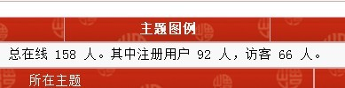
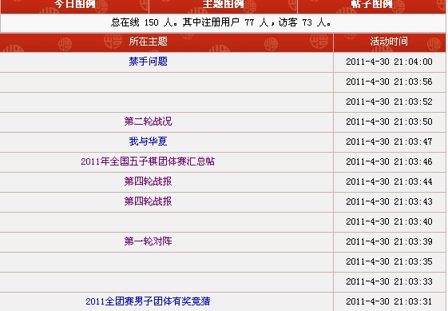
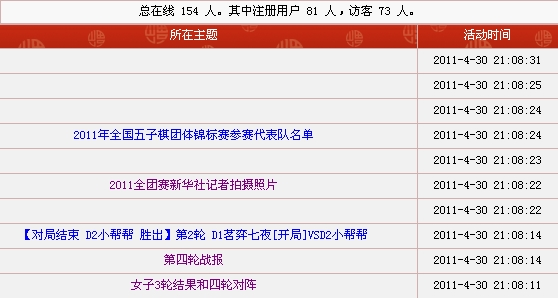

爱五子棋网在线突破200人,恭喜恭喜
#1 爱五子棋网在线突破200人,恭喜恭喜作者：岳麓小棋后 发表时间：2010-8-23 15:27:20
#2 Re:爱五子棋网在线突破200人,恭喜恭喜作者：忧郁的双眼 发表时间：2010-8-23 18:35:31
象我们这种从来都是隐身的人路过~#3 Re:爱五子棋网在线突破200人,恭喜恭喜作者：无尽 发表时间：2010-8-23 18:40:50
其实好多是蜘蛛
#4 Re:爱五子棋网在线突破200人,恭喜恭喜作者：松痕 发表时间：2010-8-23 20:24:02
这个在哪里查询呢
#5 Re:爱五子棋网在线突破200人,恭喜恭喜作者：孤竹 发表时间：2010-8-23 20:36:09
啥是蜘蛛#6 Re:爱五子棋网在线突破200人,恭喜恭喜作者：有志青年 发表时间：2010-8-24 10:58:11
看注册用户数比较准确
期待在线的注册用户数突破100，哈哈
［此帖子已被 有志青年 在 2010-8-24 11:24:37 编辑过］
#7 Re:爱五子棋网在线突破200人,恭喜恭喜作者：无尽 发表时间：2010-8-24 12:30:26
引用：
原文由 孤竹 发表于 2010-8-23 20:36:09 :
啥是蜘蛛
搜索引擎公司放出来的咚咚，专门收集网页信息的
［此帖子已被 无尽 在 2010-8-24 12:31:00 编辑过］
#8 Re:爱五子棋网在线突破200人,恭喜恭喜作者：极地剑客 发表时间：2010-8-24 13:50:22
要是200个MM多好啊~#9 Re:爱五子棋网在线突破200人,恭喜恭喜作者：有志青年 发表时间：2010-8-24 15:16:18
极地三句不离mm呀
#10 Re:爱五子棋网在线突破200人,恭喜恭喜作者：雨一直下 发表时间：2010-8-24 16:27:33
 如果离了MM还是小极地吗？
如果离了MM还是小极地吗？#11 Re:爱五子棋网在线突破200人,恭喜恭喜作者：有志青年 发表时间：2010-10-4 14:47:02
总在线 150 人。其中注册用户 83 人，访客 67 人。#12 Re:爱五子棋网在线突破200人,恭喜恭喜作者：nara 发表时间：2010-10-4 14:52:29
总在线 151 人。其中注册用户 89 人，访客 62 人。#13 Re:爱五子棋网在线突破200人,恭喜恭喜作者：nara 发表时间：2010-10-4 14:53:10
总在线 156 人。其中注册用户 91 人，访客 65 人。#14 Re:爱五子棋网在线突破200人,恭喜恭喜作者：有志青年 发表时间：2010-10-4 15:09:14
#15 Re:爱五子棋网在线突破200人,恭喜恭喜作者：有志青年 发表时间：2011-4-20 16:23:49
［此帖子已被 有志青年 在 2011-4-20 16:24:40 编辑过］
#16 Re:爱五子棋网在线突破200人,恭喜恭喜作者：有志青年 发表时间：2011-4-20 16:28:19
nnd，正在长人
#17 Re:爱五子棋网在线突破200人,恭喜恭喜作者：有志青年 发表时间：2011-4-20 16:40:22
继续涨，来的蜘蛛不少哟
#18 Re:爱五子棋网在线突破200人,恭喜恭喜作者：无尽 发表时间：2011-4-20 19:52:13
为神马蜘蛛越来越多。。。#19 Re:爱五子棋网在线突破200人,恭喜恭喜作者：有尽 发表时间：2011-4-20 22:45:52
什么时候注册用户在线长期100+就好了，
楼上的有人建议你论坛搞比赛活动，
或者竞猜活动，
#20 Re:爱五子棋网在线突破200人,恭喜恭喜作者：有志青年 发表时间：2011-4-30 21:06:10


［此帖子已被 有志青年 在 2011-4-30 21:10:02 编辑过］
［此帖子已被 有志青年 在 2011-4-30 21:10:21 编辑过］
#21 Re:爱五子棋网在线突破200人,恭喜恭喜作者：冰雪笑醉 发表时间：2011-5-2 4:27:00
 半夜了还有几十个在线的。。
半夜了还有几十个在线的。。#22 Re:爱五子棋网在线突破200人,恭喜恭喜作者：被感动的人 发表时间：2011-5-2 10:14:17
现在总在线152，注册用户91#23 Re:爱五子棋网在线突破200人,恭喜恭喜作者：失落刀 发表时间：2011-5-2 23:04:10
今日发帖数据。